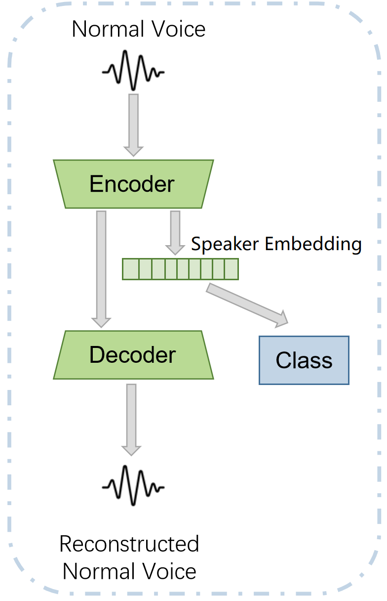
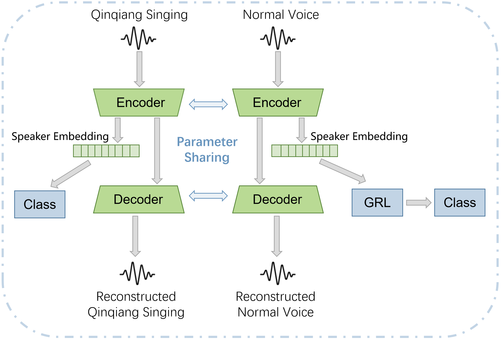

Qinqiang opera preservation suffers from complex vocalizations and scarce data. To address this, we introduce QinRhythm, a high-fidelity multi-speaker dataset, alongside a bidirectional zero-shot Singing Voice Conversion (SVC) framework. To extract robust speaker representations amid extreme melodic fluctuations, our multi-scale convolutional encoder, optimized via GRL-based adversarial training, disentangles pure biological timbre from highly stylized acoustics. This enables Speech-to-Singing for amateurs and Singing-to-Speech for the digital resurrection of historic artists. Evaluations demonstrate superior speaker similarity and naturalness over strong baselines. Audio samples are available at: https://qinrhythm.github.io/.


Conversion results from Normal Speech to Qinqiang Singing are as follows.
| Source(Qinqiang Singing) | Reference(Normal Speech) | Seed-VC(CAM++) | Seed-VC(NeXt-TDNN) | Seed-VC(BiLSTM) | Seed-VC(Prosed) |
| So-VITS-SVC | DDSP-SVC | RVC |
Conversion results from Qinqiang Singing back to Normal Speech are as follows.
| Source(Normal Speech) | Reference(Qinqiang Singing) | CosyVoice | F5-TTS | FireRedTTS | Seed-VC(CAM++) |
| Seed-VC(NeXt-TDNN) | Seed-VC(BiLSTM) | Seed-VC(Proposed) |